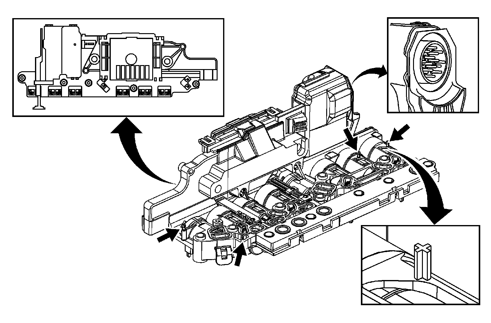

Control Solenoid Valve and Transmission Control Module Assembly Inspection
Control Solenoid Valve and Transmission Control Module Assembly Inspection
Control Solenoid Valve and Transmission Control Module Assembly Inspection:

1. Inspect the control solenoid (w/body and TCM) valve assembly connectors and pins (2, 3, 4) for the following conditions:
* Damage
* Bent pins
* Debris
* Broken retaining tab
* Contamination
2. Ensure no metallic debris is inside the connectors near the terminal pins.
3. Inspect the control solenoid (w/body and TCM) valve assembly solenoid leads (1) for contamination or metallic debris.
4. Inspect the 4 control solenoid (w/body and TCM) valve assembly filter plate retaining tabs (5) for cracks and ensure proper tension when filter plate is attached.